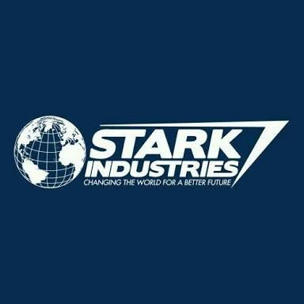

La compañía está representada por el empresario Anthony Edward "Tony" Stark, también conocido como Iron Man. Apareció por primera vez en Tales of Suspense # 40 (abril de 1963) y fue fundado por el padre de Tony, Howard Stark. Según Forbes, las 25 compañías de ficción más grandes tenía unas ventas estimadas de $ 20.3 mil millones, clasificándolo en el número 16.
En Marvel Cinematic Universe, Industrias Stark tiene un logo similar al de los contratistas de defensa Lockheed Martin y Northrop Grumman y figura en la Bolsa de Nueva York como SIA. Durante la escena de la conferencia de prensa, Stark es visto entrando a un edificio que se asemeja a la entrada de las instalaciones de Skunk Works de Lockheed Martin. Un aeroplano extremadamente similar al Lockheed YF-22 quedó como una estatua en frente de las instalaciones de Industrias Stark, exactamente como los prototipos que se exhiben en las instalaciones Skunk Works en Palmdale, California.